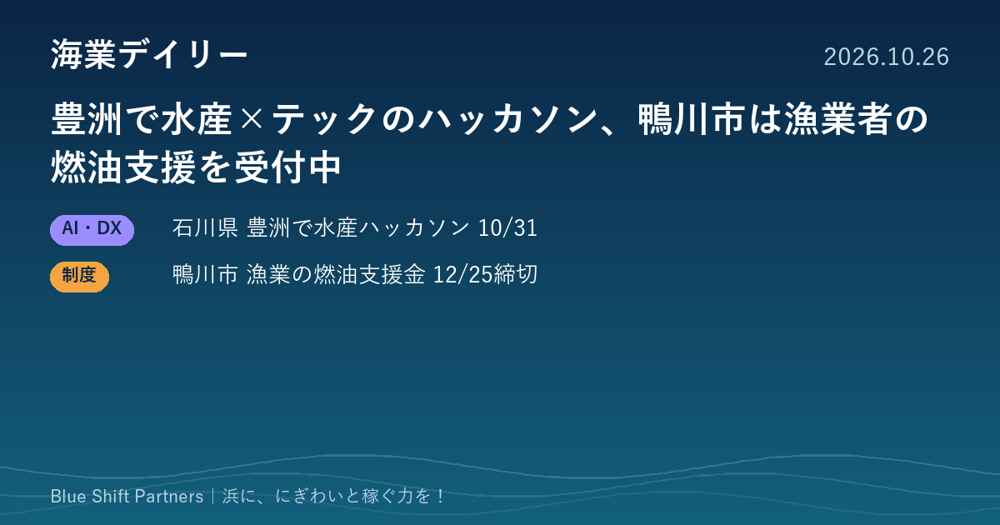

2026.10.26
豊洲で水産×テックのハッカソン、鴨川市は漁業者の燃油支援を受付中

石川県が10月31日、豊洲市場で水産業の課題にテクノロジーで挑むハッカソンを開きます。千葉県鴨川市では、漁業者向けの燃油価格高騰の支援金を12月25日まで受け付けています。
石川県、豊洲市場で「FISH × TECH HACKATHON 2026」を10月31日に開催
石川県デジタル推進監室は、10月31日（土）10時から15時まで、豊洲市場の講堂で「FISH × TECH HACKATHON 2026」を開きます。テーマは「#いしかわの海の幸をアプデしまっし」で、東京の市場関係者や水産事業者から流通の現状や現場の課題を聞き、学生や社会人、エンジニア、デザイナーなどが解決策を考えます。成果物はWebアプリ、生成AI、データ分析など形式は自由で、水産の専門知識は不要、参加費は無料です。今回は課題発見編で、成果発表編は12月12日（土）に予定されています。
ここがポイント：産地の県が消費地の市場に出向き、IT人材と一緒に流通の課題を考える試みです。浜の課題を外部の若い人材やデジタルの力で解く、ひとつの型として参考になります。
出典：石川県（PR TIMES）「FISH × TECH HACKATHON 2026」（2026-10-15）
鴨川市、漁業者向けの燃油価格高騰支援金を12月25日まで受付
千葉県鴨川市は「鴨川市漁業用燃油価格高騰重点支援金」の申請を受け付けています。対象は市内に住所や事業所があり、漁協の正組合員として漁業を営む方で、令和7年分の確定申告で計上した燃料費が2万円以上であることなどが条件です。支給額は令和7年分の燃料費の5％（千円未満切り捨て）で、申請は1回限りです。締切は令和8年12月25日（金）で、市役所の農林水産課への持参または郵送（当日消印有効）で申請します。
ここがポイント：燃料費は漁業経営の大きな負担です。漁協は、まだ申請していない組合員への声かけや書類準備の手伝いで、確実に受け取れるよう後押しできます。
出典：鴨川市「鴨川市漁業用燃油価格高騰重点支援金」（2026-06-01）
デジタルで流通の課題を考える場と、燃料費の負担を和らげる支援。攻めと守りは違って見えますが、どちらも浜の稼ぐ力を支える両輪です。使える制度を取りこぼさず、新しい知恵を外から取り込む姿勢が、次の一手につながります。